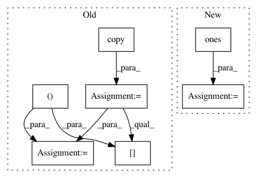

d5af4c37893a7ead45a966eb89a3e4018a97e556,nilearn/connectivity/connectivity_matrices.py,,sym_to_vec,#Any#,189
Before Change
The output flattened lower triangular part of symmetric.
tril_mask = np.tril(np.ones(symmetric.shape[-2:]), -1).astype(np.bool)
symmetric = symmetric.copy()
symmetric[..., tril_mask] *= sqrt(2)
tril_mask.flat[::symmetric.shape[-1] + 1] = True
return symmetric[..., tril_mask]
After Change
scaling = sqrt(2) * np.ones(symmetric.shape[-2:])
np.fill_diagonal(scaling, 1.)
tril_mask = np.tril(np.ones(symmetric.shape[-2:])).astype(np.bool)
return symmetric[..., tril_mask] * scaling[tril_mask]
def _cov_to_corr(covariance):
In pattern: SUPERPATTERN
Frequency: 3
Non-data size: 7
Instances
Project Name: nilearn/nilearn
Commit Name: d5af4c37893a7ead45a966eb89a3e4018a97e556
Time: 2015-10-06
Author: sb238920@is223297.intra.cea.fr
File Name: nilearn/connectivity/connectivity_matrices.py
Class Name:
Method Name: sym_to_vec
Project Name: modAL-python/modAL
Commit Name: f8df6021a1343d511d4c9b4c108ec5b683ce5487
Time: 2018-08-14
Author: dannyofig@gmail.com
File Name: modAL/batch.py
Class Name:
Method Name: ranked_batch
Project Name: arraiy/torchgeometry
Commit Name: 50839f8ed95147c71f9f045495ed45380a2ce513
Time: 2019-11-19
Author: priba@cvc.uab.cat
File Name: test/color/test_hls.py
Class Name: TestRgbToHls
Method Name: test_nan_rgb_to_hls